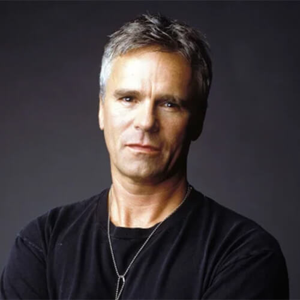
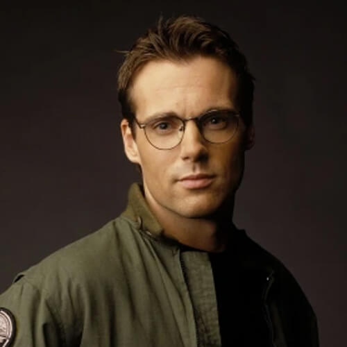
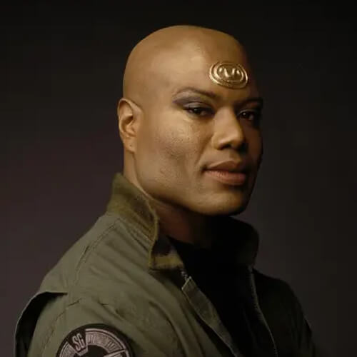
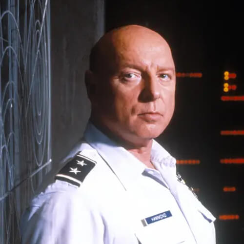
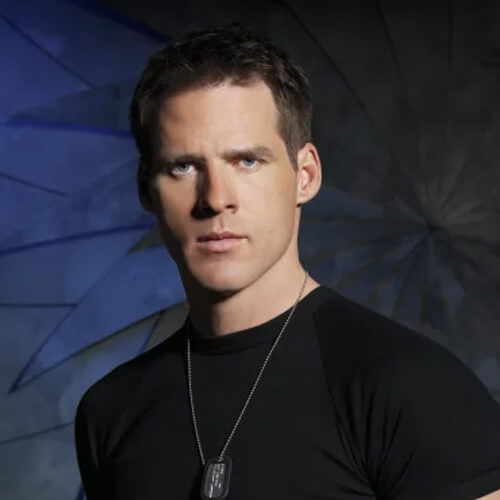
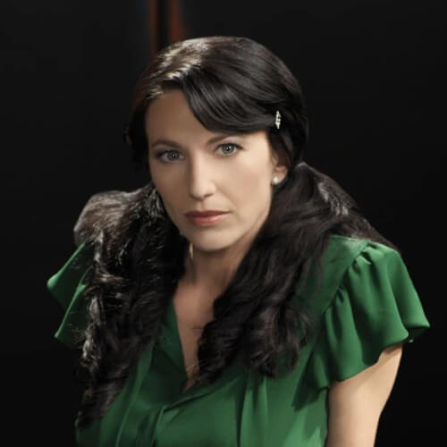
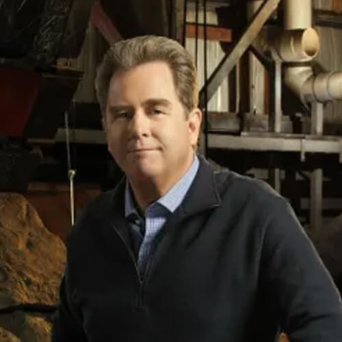

PERSONAJES
Jack O'Neill
Jonathan J. O'Neill, también conocido como Jack, es un teniente general de la Fuerza Aérea, que sirvió durante siete años en el Comando Stargate, anteriormente como coronel y también como líder de SG-1, el equipo principal del Comando.
Daniel Jackson
Daniel Jackson, es un arqueólogo y lingüista y miembro del equipo insignia del Comando Stargate, SG-1. Jackson fue él quien descifro como activar el Stargate en 1994, luego acompañó al equipo que hizo primer contacto con los Goa'uld y sus pueblos súbditos en Abydos. Aunque tenía la intención de permanecer en Abydos, regresó a la Tierra al año siguiente cuando su esposa Sha're fue secuestrada por el Goa'uld Apophis.
Samantha Carter

Samantha Carter es astrofísica, ingeniera y piloto, y desempeñó un papel clave en el establecimiento del Programa Stargate antes de ser asignada al equipo insignia, SG-1. Es considerada la principal experta de la tierra en materia de Stargates y otra gran cantidad de tecnologías alienígenas.
Teal'c
Teal'c de Chulak, es un Jaffa revolucionario del planeta Chulak y miembro del equipo de reconocimiento SG-1. Antes de cambiar de bando, sirvió a los Goa'uld y al Señor del Sistema Apophis como su primer comandante.
George Hammmond
George S. Hammond es teniente general a cargo del Comando Stargate. Hammond estaba a punto de retirarse, cuando el Lord del Sistema Goa'uld Apophis lanzó un ataque a la Tierra en 1997. Posteriormente, se convirtió en el oficial al mando del relanzado SGC.
Cameron Mitchell
Cameron Mitchell, o Cam, es un coronel de la Fuerza Aérea. Mitchell participo en la Batalla de la Antártida en 2004, donde sufrio graves heridas. Después de recuperarse por completo, solicitó unirse al SG-1, solo para descubrir que los otros miembros habían dejado la unidad para seguir caminos diferentes. Sin embargo, después de unos meses, volvió a reunir al equipo.
Vala Mal Doran
Vala Mal Doran es una ladrona, estafadora y ex anfitriona de Goa'uld, que cruzo caminos varias veces con el Comando Stagate. Luego de demostrar su valentía durante la Batalla de Kallana en 2005, se convirtió en un miembro oficial de SG-1.
Hank Landry
Henry "Hank" Landry es un general de la Fuerza Aérea y oficial al mando del SGC. Landry fue asignado a su puesto por el presidente Henry Hayes, después de haber sido elegido personalmente por su predecesor.